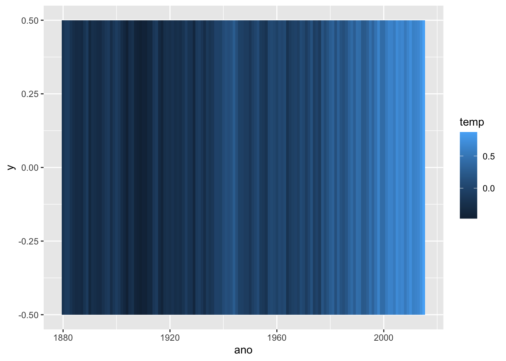
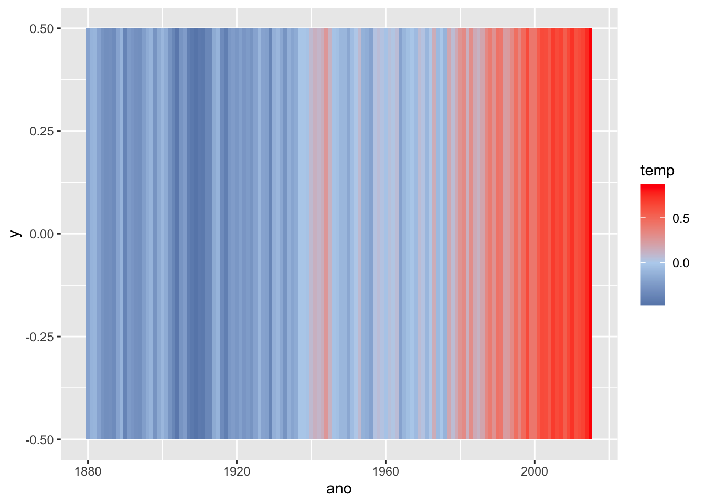

Cada listra nesta imagem representa a temperatura de um ano desde o 1850 até o presente. A mensagem é bastante clara: o planeta está cada ano mais quente e é nos anos recentes que estão concentradas as maiores altas de temperatura. Neste post discuto como reproduzir esta visualização usando R.
data-visualization
tutorial-R
repost
ggplot2
Author
Vinicius Oike
Published
January 10, 2020
Uma recente edição da revista inglesa The Economist exibe uma série de listras coloridas em sua capa. Elas formam um degradê que vai de um azul escuro até um vermelho intenso. Cada listra representa a temperatura de um ano e a linha do tempo vai desde o 1850 até o presente. A mensagem é bastante clara: o planeta esta cada ano mais quente e é nos anos recentes que estão concentradas as maiores altas de temperatura. Esta imagem é creditada a Ed Hawkings, editor do Climate Lab Book.
Para ser preciso, a imagem não plota a temperatura de cada ano, mas sim o quanto cada ano se desvia da temperatura média do período 1971-2000. Isto é, anos acima dessa média têm um valor positivo, valores abaixo dessa média, valores negativos. Esta é uma forma bastante comum de representar este tipo de dado climático. De imediato, quando vi a imagem me ocorreu que seria bastante simples reproduzir uma versão aproximada dela usando o R.
O código
O código necessário para gerar a imagem é bastante enxuto. Vou descrever em linhas gerais o que ele faz:
Primeiro carrego dois pacotes (linhas 1, 2), depois a série de temperatura (linha 3), faço algumas transformações nos dados (linhas 4, 5) e, por fim, ploto os dados (linhas 6, 7, 8). O resultado inicial já é bastante satisfatório e a partir destas poucas linhas de código pode-se chegar num resultado muito próximo ao da imagem original. Vale notar que a imagem fica um pouco diferente da original porque eu uso uma base de dados diferente.
# Carrega pacoteslibrary(ggplot2)library(astsa)# Carrega a base de dados 'xglobtemp'data("xglobtemp")# Converte o objeto para data.framedf <-data.frame(ano =as.numeric(time(xglobtemp)),temp =as.numeric(xglobtemp))# Monta o gráficoggplot(data = df, aes(x = ano, y =0, fill = temp)) +geom_tile() +scale_fill_gradient2(low ="#104e8b", mid ="#b9d3ee", high ="#ff0000")
Os detalhes do código
Vou explicar cada linha de código para ser didático. O R funciona, grosso modo, como um repositório de pacotes: cada pacote contem funções e, às vezes, bases de dados. O primeiro pacote que carrego é o ggplot2. Ele serve para fazer visualizações de dados. O pacote astsa traz várias funções para fazer análise de séries de tempo, mas eu carrego ele somente para usar a base de dados xglobtemp, que traz informação sobre a temperatura anual da terra coletada pela NASA.
O objeto xglobtemp é uma série de tempo (um objeto da classe ts), que tem alguns atributos especiais. Um deles pode ser acesado pela função time que extrai um vetor numérico com as datas desta série de tempo. No código abaixo mostro os primeiros dez valores do time(xglobtemp).
Para extrair somente os valores da série, uso a função as.numeric, que converte o vetor de ts para numeric (numérico). Este tipo de função é bastante comum já que frequentemente é preciso trocar a classe de um objeto. O objetivo destes primeiros passos é de inserir as informações do xglobtemp num data.frame em que a data aparece na primeira coluna e os valores da série são armazenados na segunda coluna. O procedimento pode parecer um tanto trabalhoso (e acho que é mesmo), mas é o jeito. Um data.frame é como uma tabela com dados. Este é um objeto bastante típico em análise de dados e é necessário para usar a função ggplot que vai fazer o gráfico. Abaixo pode-se ver as primeiras linhas desta tabela.
Agora que tenho os dados no formato apropriado posso usar o ggplot. O argumento que pode ser um pouco confuso é o aes. Nele especifica-se quais dados serão mapeados no gráfico. Depois disso adicionamos um geom. Há vários tipos de geom (geom_line, geom_bar, geom_histogram, etc.) e cada um deles produz uma imagem diferente. O geom_tile faz um pequeno quadrado. Para que a função consiga desenhar o quadrado é preciso informar uma variável x e uma variável y. Além disso, também especifico fill = temp. O fill se refere à cor que vai preencher (fill) o quadrado. Como especifico fill = temp a cor do quadrado vai representar a variável temp (temperatura).
ggplot(data = df, aes(x = ano, y =0, fill = temp)) +geom_tile()

O resultado é exatamente como o esperado, mas ainda é preciso mudar a escala de cores. Faço isto com o scale_fill_gradient2. Aqui cada termo tem um signficado: scale_fill pois estamos mudando a escala do fill (outra opção seria scale_color que muda a escala do color). scale_fill_gradient pois queremos um gradiente (degradê) de cores. Por fim, o 2 é adicionado no final pois queremos um escala que diferencie dois grupos distintos: temperaturas acima da média em vermelho, temperaturas abaixo da média em azul. A escala de cores é determinada pelos argumentos low, mid e high.
Os valores negativos serão coloridos pelo low, os próximos de zero pelo mid e os valores grandes pelo high. Abaixo escrevo as cores em hexa-decimal, mas elas podem ser lidas, essencialmente, como: azul-escuro, cinza-azulado-claro e vermelho-escuro.
ggplot(data = df, aes(x = ano, y =0, fill = temp)) +geom_tile() +scale_fill_gradient2(low ="#104e8b", mid ="#b9d3ee", high ="#ff0000")

Como comentei acima, pode-se melhorar o gráfico acima adicionando outros elementos e detalhes. A versão final que fiz do gráfico fica no código abaixo.
# Pacote para carregar fontes externas no R# Necessário para utilizar 'Georgia' no gráficolibrary(extrafont)# Data.frames auxiliares para plotar as anotações de textodf_aux_title <-data.frame(x =1930, y =0, label ="The Climate Issue")df_aux_anos <-data.frame(label =c(1880, 1920, 1960, 2000),x =c(1890, 1925, 1960, 1995) )ggplot() +geom_tile(data = df, aes(x = ano, y =0, fill = temp)) +geom_text(data = df_aux_anos,aes(x = x, y =0, label = label),vjust =1.5,colour ="white",size =6,family ="Georgia") +geom_text(data = df_aux_title,aes(x =1950, y =0.05, label = label),family ="Georgia",size =11,colour ="white") +geom_hline(yintercept =0, colour ="white", size =1) +scale_fill_gradientn(colors =c("#213A82", "#3B60CE", "#8DA2E2", "#DE2E02", "#9d0208") ) +guides(fill ="none") +labs(x =NULL, y =NULL) +theme(axis.title =element_blank(),axis.text =element_blank(),axis.ticks =element_blank(),panel.background =element_rect(fill =NA),plot.margin =margin(c(0, 0, 0, 0)) )